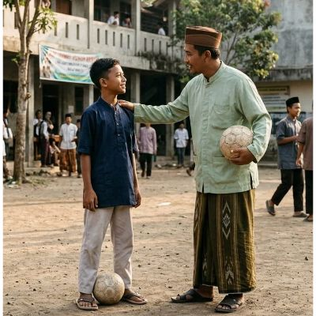
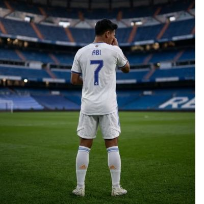

SLangkah Kecil Menuju Santiago Bernabéu
Kategori: Cerita inspiratif

Di sebuah sudut kota yang tenang, hiduplah seorang anak laki-laki bernama Abi. Terlahir dari keluarga sederhana membuat Abi terbiasa hidup apa adanya. Namun, keterbatasan ekonomi tidak pernah menyurutkan senyum ramah dan kebaikan hatinya kepada siapa saja. Sejak duduk di bangku Sekolah Dasar swasta dekat rumahnya, Abi sudah jatuh cinta pada satu hal: sepak bola.
Setiap sore, tanah lapang berdebu menjadi saksi bisu kerja kerasnya. Abi berlatih menggiring bola, menendang, dan berlari tanpa kenal lelah. Sayangnya, ada satu tembok besar yang sering membuatnya diremehkan. Postur tubuh Abi jauh lebih kecil dan kurus dibandingkan teman-teman sebayanya. Ia sering terjatuh saat beradu fisik, dan napasnya kerap habis lebih cepat. Banyak yang meragukannya, tetapi Abi memilih untuk menutup telinga dan terus berlatih keras, menutupi kekurangan fisiknya dengan kelincahan dan kecerdasan membaca permainan.
Ujian sesungguhnya datang ketika Abi lulus SD. Orang tuanya memutuskan untuk memasukkan Abi ke sebuah pesantren. Di lingkungan yang baru itu, fokus utama Abi adalah menuntut ilmu agama. Tidak ada lapangan rumput yang layak, tidak ada sepatu bola, dan tidak ada latihan rutin seperti dulu. Hari demi hari berlalu, bola kulit itu seolah semakin menjauh dari hidupnya. Merasa mimpinya mustahil terwujud di balik tembok pesantren, Abi perlahan menyerah. Ia berniat mengubur dalam-dalam cita-citanya menjadi seorang pesepak bola.
Namun, takdir selalu punya cara untuk mengejutkan. Suatu hari, seorang ustaz yang juga menjadi guru olahraganya memanggil Abi. Pihak kecamatan akan mengadakan turnamen sepak bola antar-pelajar, dan pesantren mereka diminta mengirimkan perwakilan. Melihat sorot mata Abi yang masih menyimpan gairah setiap kali melihat bola, sang guru menawarinya untuk ikut seleksi.
Tawaran itu bagaikan percikan api yang menyalakan kembali bara yang hampir padam. Abi tidak menyia-nyiakan kesempatan emas tersebut. Di sela-sela jadwal mengaji dan belajar yang padat, ia melatih fisiknya sendiri—berlari mengelilingi halaman pesantren saat subuh, melakukan push-up di kamar, dan melatih kelincahan kakinya dengan bola plastik seadanya.
Saat hari seleksi tiba, tubuh kecil Abi kembali dipandang sebelah mata. Namun, begitu peluit berbunyi, Abi membuktikan segalanya. Ia berlari paling cepat, umpannya paling akurat, dan visinya dalam bermain jauh melampaui pemain lain. Kerja kerasnya terbayar lunas: Abi terpilih menjadi pemain inti dan kapten tim pesantren.
Turnamen tingkat kecamatan itu menjadi panggung pembuktian Abi. Permainan gemilangnya menarik perhatian para pemandu bakat lokal yang kebetulan hadir menonton. Dari lapangan kecamatan yang sederhana, pintu-pintu besar mulai terbuka satu per satu.
Setelah lulus dari pesantren, karier Abi melesat bak meteor. Bakat alamiah yang ditempa oleh disiplin pesantren dan kerja keras sejak kecil membuatnya direkrut oleh akademi sepak bola ternama. Tak butuh waktu lama bagi Abi untuk menembus skuad utama Persib Bandung. Di hadapan puluhan ribu Bobotoh, Abi menjelma menjadi idola baru. Tubuhnya yang dulu dianggap lemah kini telah ditempa menjadi sangat atletis, tangguh, namun tetap memiliki kelincahan luar biasa.
Performa impresifnya di liga domestik dan tim nasional membuat radar klub-klub Eropa mengarah kepadanya. Sebuah sejarah tercipta ketika raksasa Liga Inggris, Manchester United, resmi memboyongnya ke Old Trafford. Di bawah sorotan lampu Teater Impian, anak sederhana yang dulu berlatih di lapangan berdebu itu kini bahu-membahu bersama bintang-bintang dunia.

Puncak dari segala mimpinya terwujud beberapa tahun kemudian. Real Madrid, klub tersukses di dunia, menebusnya dengan kontrak fantastis. Saat Abi melangkahkan kakinya ke rumput hijau Stadion Santiago Bernabéu mengenakan seragam putih kebanggaan Los Blancos, ia menengadah ke langit dengan mata berkaca-kaca.
Ia teringat pada anak kecil bertubuh kurus yang dulu sering terjatuh, dan santri yang hampir menyerah pada mimpinya. Abi membuktikan kepada dunia bahwa keterbatasan fisik dan fasilitas bukanlah akhir dari segalanya. Selama ada kemauan untuk bangkit saat kesempatan datang, mimpi setinggi langit pun bisa digenggam.